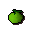

Frenita's Cookery Shop.
Inventory config
cookeryshopRun by  Frenita. Open in knowledge graph →
Frenita. Open in knowledge graph →
Located in: Wizards' Guild
Stock
| Item | Stock | Value | Sells for |
|---|---|---|---|
| 5 | 3 gp | 3 gp | |
 Cooking apple | 2 | 1 gp | 1 gp |
| 2 | 10 gp | 10 gp | |
| 2 | 4 gp | 4 gp | |
| 5 | 1 gp | 1 gp | |
| 4 | |||
| 1 | 1 gp | 1 gp | |
| 8 | 1 gp | 1 gp | |
| 2 | 10 gp | 10 gp | |
| 8 | 10 gp | 10 gp |
Shop sells at 100.0% of item value and buys at 55.0%.